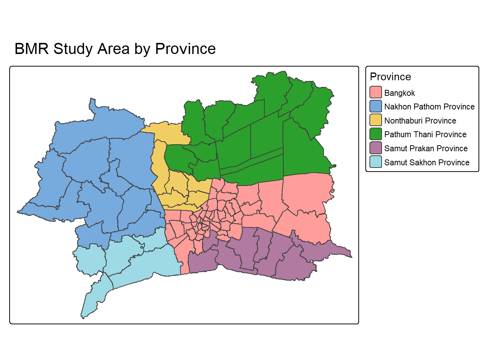
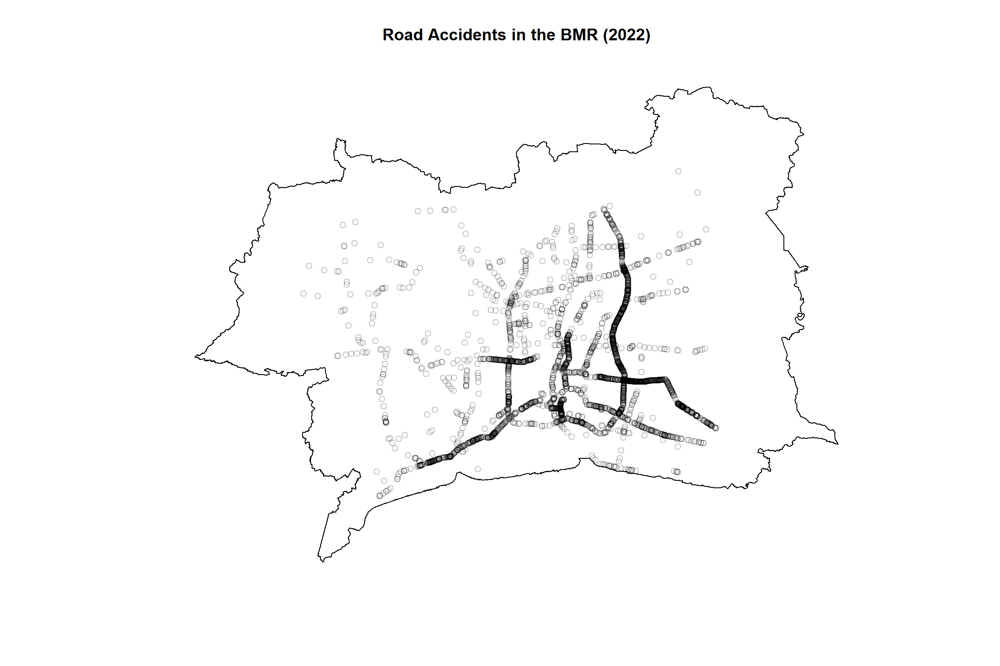

pacman::p_load(tidyverse, sf, spatstat, sparr, stpp,
spNetwork, tmap, knitr)Take-home Exercise 1: Geospatial Analytics for Public Safety
Spatial and Spatio-Temporal Point Pattern Analysis of Road Traffic Accidents in the Bangkok Metropolitan Region
1 Overview
Public safety planning increasingly relies on location-based evidence to identify where and when incidents concentrate, so that enforcement, engineering, and policy responses can be targeted rather than applied uniformly across a region. Road traffic accidents are a point event well suited to this type of analysis: each incident carries a location and a time, and the accumulated pattern of incidents can reveal whether risk is randomly scattered or systematically concentrated in identifiable places and periods.
This exercise applies spatial and spatio-temporal point pattern analysis to road traffic accident data for the Bangkok Metropolitan Region (BMR), Thailand, covering Bangkok and the five adjacent provinces of Nonthaburi, Nakhon Pathom, Pathum Thani, Samut Prakan, and Samut Sakhon.
2 Analytical Questions
- How is the intensity of road traffic accidents distributed across space and time within the BMR?
- Do accidents exhibit statistically significant spatial and spatio-temporal clustering, beyond what would be expected under complete spatial randomness?
- Does accounting for the road network materially change the interpretation of accident concentration, compared to treating accidents as freely distributed in planar space?
- What do the resulting patterns imply for public safety planning and resource allocation within the region?
3 The Data
Three datasets are used in this exercise:
| Dataset | Description | Format | Source | Date Accessed |
|---|---|---|---|---|
| Thailand Road Accident (2019 to 2022) | Accident-level records with location, timing, severity, and contributing-factor fields, sourced from the Ministry of Transport’s TRAMS dashboard. Only the 2022 subset is used for this study. | CSV | Kaggle | 20 Sep 2026 |
| Thailand Administrative Boundaries, ADM2 | District-level administrative boundaries for Thailand | GeoJSON | geoBoundaries | 20 Sep 2026 |
| Thailand Road Network (OpenStreetMap extract) | Line-based road network for Thailand, classified by highway type under the fclass field |
Shapefile | Geofabrik | 20 Sep 2026 |
4 Installing and Loading the R Packages
The following R packages are used across this exercise:
| Package | Purpose | Use Case in This Exercise |
|---|---|---|
| tidyverse | Collection of packages for data import, manipulation, and visualisation | Importing, cleaning, and transforming the accident dataset |
| sf | Imports, manages, and processes vector-based geospatial data | Handling the administrative boundary and road network data, and constructing spatial point objects from the accident coordinates |
| spatstat | Toolkit for spatial point pattern analysis | First-order (KDE, quadrat) and second-order (G, F, K, L functions) analysis of accident intensity and clustering |
| sparr | Kernel estimation of spatial and spatio-temporal densities | Spatio-temporal KDE of accident intensity across months in 2022 |
| stpp | Analysis of second-order properties of spatio-temporal point processes | Testing for space-time interaction beyond what spatial and temporal clustering alone would predict |
| spNetwork | Spatial analysis constrained to a network | Network-constrained kernel density estimation (NKDE) of accidents along the road network |
| tmap | Static and interactive thematic mapping | Choropleth maps, KDE surfaces, and accident point maps throughout the report |
| knitr | Dynamic report generation | Rendering tables and controlling code chunk output in this document |
5 Reproducibility
A fixed seed value of 123 is set for reproducibility of any simulation-based procedure used later in this exercise.
set.seed(123)6 Importing and Preparing the Data
This section imports and prepares each of the three datasets described above. The study area for this exercise is the Bangkok Metropolitan Region (BMR), operationalised at the district (ADM2) level, and the study period is restricted to 2022.
6.1 Thailand Road Accident Data
The accident dataset is imported using read_csv() of the readr package:
rdacc <- read_csv("data/thai_road_accident_2019_2022.csv")Null values are checked across every column:
colSums(is.na(rdacc)) acc_code incident_datetime
0 0
report_datetime province_th
0 0
province_en agency
0 0
route vehicle_type
0 0
presumed_cause accident_type
0 0
number_of_vehicles_involved number_of_fatalities
0 0
number_of_injuries weather_condition
0 0
latitude longitude
359 359
road_description slope_description
0 0
Note
Analysis:
Of the 359 rows with missing coordinates, 350 are attributed to a single agency, the Expressway Authority of Thailand. The other two agencies, Department of Highways and Department of Rural Roads, have almost none missing. The affected rows are concentrated in Bangkok and in the 2021 to 2022 period. These rows cannot be placed spatially, so they are dropped from the point pattern analysis. As a result, accidents attributed to the Expressway Authority, largely Bangkok’s controlled-access expressway network, are undercounted relative to the other two agencies.
Exact duplicate rows are checked next:
sum(duplicated(rdacc))[1] 0The set of provinces represented in the data is inspected, since only accidents within the six BMR provinces are relevant to this exercise:
sort(unique(rdacc$province_en)) [1] "Amnat Charoen" "Ang Thong"
[3] "Bangkok" "buogkan"
[5] "Buri Ram" "Chachoengsao"
[7] "Chai Nat" "Chaiyaphum"
[9] "Chanthaburi" "Chiang Mai"
[11] "Chiang Rai" "Chon Buri"
[13] "Chumphon" "Kalasin"
[15] "Kamphaeng Phet" "Kanchanaburi"
[17] "Khon Kaen" "Krabi"
[19] "Lampang" "Lamphun"
[21] "Loburi" "Loei"
[23] "Mae Hong Son" "Maha Sarakham"
[25] "Mukdahan" "Nakhon Nayok"
[27] "Nakhon Pathom" "Nakhon Phanom"
[29] "Nakhon Ratchasima" "Nakhon Sawan"
[31] "Nakhon Si Thammarat" "Nan"
[33] "Narathiwat" "Nong Bua Lam Phu"
[35] "Nong Khai" "Nonthaburi"
[37] "Pathum Thani" "Pattani"
[39] "Phangnga" "Phatthalung"
[41] "Phayao" "Phetchabun"
[43] "Phetchaburi" "Phichit"
[45] "Phitsanulok" "Phra Nakhon Si Ayutthaya"
[47] "Phrae" "Phuket"
[49] "Prachin Buri" "Prachuap Khiri Khan"
[51] "Ranong" "Ratchaburi"
[53] "Rayong" "Roi Et"
[55] "Sa Kaeo" "Sakon Nakhon"
[57] "Samut Prakan" "Samut Sakhon"
[59] "Samut Songkhram" "Saraburi"
[61] "Satun" "Si Sa Ket"
[63] "Sing Buri" "Songkhla"
[65] "Sukhothai" "Suphan Buri"
[67] "Surat Thani" "Surin"
[69] "Tak" "Trang"
[71] "Trat" "Ubon Ratchathani"
[73] "Udon Thani" "unknown"
[75] "Uthai Thani" "Uttaradit"
[77] "Yala" "Yasothon" The six BMR province names are confirmed to appear exactly as expected in the list above (Bangkok, Nonthaburi, Nakhon Pathom, Pathum Thani, Samut Prakan, Samut Sakhon).
The dataset is filtered to the study area (BMR) and study period (2022), and limited to rows with valid coordinates. It is then converted into a spatial point object.
bmr_provinces <- c("Bangkok", "Nonthaburi", "Nakhon Pathom",
"Pathum Thani", "Samut Prakan", "Samut Sakhon")
accidents_bmr <- rdacc %>%
filter(province_en %in% bmr_provinces,
year(incident_datetime) == 2022,
!is.na(latitude), !is.na(longitude)) %>%
st_as_sf(coords = c("longitude", "latitude"), crs = 4326) %>%
st_transform(crs = 32647)
Note
- crs = 4326 labels the coordinates as WGS84 decimal degrees
- crs = 32647 then reprojects them into UTM Zone 47N (metres). EPSG:32647 specifically covers 96°E to 102°E, the zone the BMR provinces fall within; this reprojection is needed for the distance- and area-based methods used later.
6.2 Administrative Boundaries: Bangkok Metropolitan Region (BMR)
Thailand’s administrative boundaries run from country (ADM0), through province (ADM1), district (ADM2), to sub-district (ADM3).
This exercise uses both ADM1 and ADM2: ADM1 identifies the six provinces that make up the BMR by name, and ADM2 supplies the actual study area boundary at finer district resolution, needed later for the network-constrained analysis. ADM2’s own attribute table does not record which province each district belongs to, so the two levels are combined through a spatial join.
ADM1 is imported first, since it supplies the province names needed to define the BMR.
tha_adm1 <- st_read("data/geoBoundaries-THA-ADM1.geojson")Reading layer `geoBoundaries-THA-ADM1' from data source
`C:\yxlinn\ISSS626-GAA\Take-home_Ex\Take-home_Ex01\data\geoBoundaries-THA-ADM1.geojson'
using driver `GeoJSON'
Simple feature collection with 77 features and 5 fields
Geometry type: MULTIPOLYGON
Dimension: XY
Bounding box: xmin: 97.34381 ymin: 5.612851 xmax: 105.6368 ymax: 20.46483
Geodetic CRS: WGS 84head(tha_adm1)Simple feature collection with 6 features and 5 fields
Geometry type: MULTIPOLYGON
Dimension: XY
Bounding box: xmin: 99.08799 ymin: 13.17157 xmax: 104.3559 ymax: 19.73551
Geodetic CRS: WGS 84
shapeName shapeISO shapeID shapeGroup
1 Roi Et Province TH-45 36821470B96343765829948 THA
2 Phayao Province TH-56 36821470B12194119812739 THA
3 Nakhon Sawan Province TH-60 36821470B58837026258254 THA
4 Nong Bua Lam Phu Province TH-39 36821470B48254980905782 THA
5 Chachoengsao Province TH-24 36821470B91271468807469 THA
6 Surin Province TH-32 36821470B33660676013176 THA
shapeType geometry
1 ADM1 MULTIPOLYGON (((103.5111 16...
2 ADM1 MULTIPOLYGON (((99.68719 19...
3 ADM1 MULTIPOLYGON (((99.08899 15...
4 ADM1 MULTIPOLYGON (((102.0808 17...
5 ADM1 MULTIPOLYGON (((100.849 13....
6 ADM1 MULTIPOLYGON (((103.4048 15...The full list of province names is checked before filtering:
sort(unique(tha_adm1$shapeName)) [1] "Amnat Charoen Province" "Ang Thong Province"
[3] "Bangkok" "Bueng Kan Province"
[5] "Buri Ram Province" "Chachoengsao Province"
[7] "Chai Nat Province" "Chaiyaphum Province"
[9] "Chanthaburi Province" "Chiang Mai Province"
[11] "Chiang Rai Province" "Chon Buri Province"
[13] "Chumphon Province" "Kalasin"
[15] "Kamphaeng Phet Province" "Kanchanaburi Province"
[17] "Khon Kaen Province" "Krabi Province"
[19] "Lampang Province" "Lamphun Province"
[21] "Loei Province" "Lopburi Province"
[23] "Mae Hong Son Province" "Maha Sarakham Province"
[25] "Mukdahan Province" "Nakhon Nayok Province"
[27] "Nakhon Pathom Province" "Nakhon Phanom Province"
[29] "Nakhon Ratchasima Province" "Nakhon Sawan Province"
[31] "Nakhon Si Thammarat Province" "Nan Province"
[33] "Narathiwat Province" "Nong Bua Lam Phu Province"
[35] "Nong Khai Province" "Nonthaburi Province"
[37] "Pathum Thani Province" "Pattani Province"
[39] "Phangnga Province" "Phatthalung Province"
[41] "Phayao Province" "Phetchabun Province"
[43] "Phetchaburi Province" "Phichit Province"
[45] "Phitsanulok Province" "Phra Nakhon Si Ayutthaya Province"
[47] "Phrae Province" "Phuket Province"
[49] "Prachin Buri Province" "Prachuap Khiri Khan Province"
[51] "Ranong Province" "Ratchaburi Province"
[53] "Rayong Province" "Roi Et Province"
[55] "Sa Kaeo Province" "Sakon Nakhon Province"
[57] "Samut Prakan Province" "Samut Sakhon Province"
[59] "Samut Songkhram Province" "Saraburi Province"
[61] "Satun Province" "Si Sa Ket Province"
[63] "Sing Buri Province" "Songkhla Province"
[65] "Sukhothai Province" "Suphan Buri Province"
[67] "Surat Thani Province" "Surin Province"
[69] "Tak Province" "Trang Province"
[71] "Trat Province" "Ubon Ratchathani Province"
[73] "Udon Thani Province" "Uthai Thani Province"
[75] "Uttaradit Province" "Yala Province"
[77] "Yasothon Province" Next, ADM2 is imported to supply the actual study area boundary.
tha_adm2 <- st_read("data/geoBoundaries-THA-ADM2.geojson")Reading layer `geoBoundaries-THA-ADM2' from data source
`C:\yxlinn\ISSS626-GAA\Take-home_Ex\Take-home_Ex01\data\geoBoundaries-THA-ADM2.geojson'
using driver `GeoJSON'
Simple feature collection with 928 features and 5 fields
Geometry type: MULTIPOLYGON
Dimension: XY
Bounding box: xmin: 97.34336 ymin: 5.613038 xmax: 105.637 ymax: 20.46507
Geodetic CRS: WGS 84head(tha_adm2)Simple feature collection with 6 features and 5 fields
Geometry type: MULTIPOLYGON
Dimension: XY
Bounding box: xmin: 98.6116 ymin: 6.471538 xmax: 104.0843 ymax: 17.82245
Geodetic CRS: WGS 84
shapeName shapeISO shapeID shapeGroup shapeType
1 Akat Amnuai 78962969B83463915016953 THA ADM2
2 Amphawa 78962969B68169586280131 THA ADM2
3 Ao Luek 78962969B54777225393770 THA ADM2
4 Aranyaprathet 78962969B18658138340114 THA ADM2
5 At Samat 78962969B71289419444255 THA ADM2
6 Bacho 78962969B22586560209583 THA ADM2
geometry
1 MULTIPOLYGON (((104.0122 17...
2 MULTIPOLYGON (((100.0144 13...
3 MULTIPOLYGON (((98.69051 8....
4 MULTIPOLYGON (((102.5356 13...
5 MULTIPOLYGON (((103.8999 15...
6 MULTIPOLYGON (((101.7093 6....
Note
tha_adm2 has 928 features and five attribute fields: shapeName, shapeISO, shapeID, shapeGroup, and shapeType. None of the fields represent a parent province. The BMR district set therefore cannot be filtered by attribute and is derived spatially against ADM1.
Both boundaries are reprojected to EPSG:32647.
tha_adm1 <- st_transform(tha_adm1, crs = 32647)
tha_adm2 <- st_transform(tha_adm2, crs = 32647)The six BMR provinces are filtered out of ADM1:
bmr_provinces_adm1 <- c("Bangkok",
"Nonthaburi Province",
"Nakhon Pathom Province",
"Pathum Thani Province",
"Samut Prakan Province",
"Samut Sakhon Province")
adm1_bmr <- tha_adm1 %>%
filter(shapeName %in% bmr_provinces_adm1) %>%
rename(province_name = shapeName)
nrow(adm1_bmr)[1] 6
Note
shapeName is renamed to province_name to avoid a duplicate column when joined to tha_adm2, which carries its own shapeName field for district names.
Each ADM2 district is then assigned to whichever ADM1 province it overlaps most with, and only those districts assigned to one of the six BMR provinces are kept.
adm2_bmr <- st_join(tha_adm2, adm1_bmr,
join = st_intersects,
largest = TRUE) %>%
filter(!is.na(province_name)) %>%
select(shapeName, province_name, geometry)adm2_bmr %>%
st_drop_geometry() %>%
count(province_name) province_name n
1 Bangkok 52
2 Nakhon Pathom Province 11
3 Nonthaburi Province 7
4 Pathum Thani Province 14
5 Samut Prakan Province 8
6 Samut Sakhon Province 5The resulting adm2_bmr is the study area boundary used for the remainder of this exercise.
As a visual check, the boundary is plotted and coloured by province. This shows whether the districts form one connected region, or whether any district ended up misplaced or disconnected, something the count above could not reveal.
tm_shape(adm2_bmr) +
tm_polygons(fill = "province_name",
fill.legend = tm_legend(title = "Province", na.show = FALSE)) +
tm_layout(main.title = "BMR Study Area by Province",
main.title.position = "center")
6.3 Road Network
The road network is imported and inspected:
roads <- st_read("data/gis_osm_roads_free_1.shp")Reading layer `gis_osm_roads_free_1' from data source
`C:\yxlinn\ISSS626-GAA\Take-home_Ex\Take-home_Ex01\data\gis_osm_roads_free_1.shp'
using driver `ESRI Shapefile'
Simple feature collection with 2930769 features and 10 fields
Geometry type: LINESTRING
Dimension: XY
Bounding box: xmin: 97.31354 ymin: 5.643645 xmax: 105.6481 ymax: 20.47168
Geodetic CRS: WGS 84glimpse(roads)Rows: 2,930,769
Columns: 11
$ osm_id <chr> "4270622", "4828442", "4828443", "4828444", "4828446", "85607…
$ code <int> 5122, 5122, 5122, 5122, 5122, 5122, 5122, 5122, 5122, 5153, 5…
$ fclass <chr> "residential", "residential", "residential", "residential", "…
$ name <chr> "ถนนศิริมังคลาจารย์ ซอย1", "Soi Ruam- U-Thit", "Soi Ruam- U-Thit"…
$ ref <chr> NA, NA, NA, NA, NA, NA, NA, NA, NA, NA, NA, NA, NA, NA, NA, N…
$ oneway <chr> "B", "B", "B", "B", "B", "B", "F", "B", "F", "B", "F", "F", "…
$ maxspeed <int> 0, 0, 0, 0, 0, 30, 30, 0, 0, 0, 50, 0, 60, 0, 0, 60, 60, 60, …
$ layer <dbl> 0, 0, 0, 0, 0, 0, 0, 0, 0, 0, 0, 3, 0, 0, 0, 0, 0, 1, 0, 0, 2…
$ bridge <chr> "F", "F", "F", "F", "F", "F", "F", "F", "F", "F", "F", "T", "…
$ tunnel <chr> "F", "F", "F", "F", "F", "F", "F", "F", "F", "F", "F", "F", "…
$ geometry <LINESTRING [°]> LINESTRING (98.97274 18.796..., LINESTRING (98.341…st_crs(roads)$input[1] "WGS 84"The highway classification is inspected via the fclass field:
sort(unique(roads$fclass)) [1] "bridleway" "busway" "cycleway" "footway"
[5] "living_street" "motorway" "motorway_link" "path"
[9] "pedestrian" "primary" "primary_link" "residential"
[13] "secondary" "secondary_link" "service" "steps"
[17] "tertiary" "tertiary_link" "track" "track_grade1"
[21] "track_grade2" "track_grade3" "track_grade4" "track_grade5"
[25] "trunk" "trunk_link" "unclassified" "unknown" The road network is reprojected to EPSG:32647.
roads <- st_transform(roads, crs = 32647)For the purpose of this study, the network is filtered to the intercity highway classes based on the WikiProject Thailand highway classification convention.
highway_types <- c("motorway", "motorway_link",
"trunk","trunk_link",
"primary", "primary_link",
"secondary", "secondary_link",
"tertiary", "tertiary_link",
"unclassified")
roads_filtered <- roads %>%
filter(fclass %in% highway_types)
Note
The 28 fclass values include a _link variant for five of the six target classes, representing ramps and interchange connectors rather than a separate road type. These are kept alongside their base class, since dropping them would leave a gap at every interchange, breaking the network needed for the network-constrained analysis later. The rest are excluded as non-vehicular, local, or unclassifiable.
The filtered network is then clipped to the BMR study area:
roads_bmr <- st_intersection(roads_filtered, adm2_bmr)Clipping lines against polygons with st_intersection() can change geometry types. For example, a line that only touches a polygon boundary at a single point can come out as a point instead of a line. Therefore, the geometry types present in roads_bmr are checked.
st_geometry_type(roads_bmr) |> unique()[1] LINESTRING MULTILINESTRING
18 Levels: GEOMETRY POINT LINESTRING POLYGON MULTIPOINT ... TRIANGLEThe result is a mix of LINESTRING and MULTILINESTRING.
Since more than one geometry type is present, roads_bmr is cast to a single consistent type, LINESTRING, which spNetwork requires.
roads_bmr <- st_cast(roads_bmr, "LINESTRING")The resulting roads_bmr is the road network used for the network-constrained kernel density estimation later in this exercise.
7 Feature Engineering
accidents_bmr currently only has a single timestamp column, incident_datetime. This section derives temporal and contextual variables from it, which is needed to examine how accidents vary over time.
1. Temporal Variables
Temporal variables are extracted first:
accidents_bmr <- accidents_bmr %>%
mutate(month = month(incident_datetime),
month_label = month(incident_datetime, label = TRUE, abbr = TRUE),
day_of_week = wday(incident_datetime, label = TRUE, week_start = 1),
day_of_year = yday(incident_datetime))2. Season
Season is derived based on Thailand’s official three-season year - hot, rainy, and cool (Government Public Relations Department):
accidents_bmr <- accidents_bmr %>%
mutate(
md = format(incident_datetime, "%m-%d"),
season = case_when(
md >= "02-15" & md < "05-15" ~ "Hot",
md >= "05-15" & md < "10-15" ~ "Rainy",
TRUE ~ "Cool"
)
) %>%
select(-md)3. Peak Period
Peak period is derived based on Bangkok’s known morning and evening rush hours. The exact cutoffs used here are a reasonable estimate rather than an official rule.
accidents_bmr <- accidents_bmr %>%
mutate(
hms = format(incident_datetime, "%H:%M:%S"),
peak_period = case_when(
hms >= "07:00:00" & hms <= "09:00:00" ~ "Morning Peak",
hms >= "16:00:00" & hms <= "19:00:00" ~ "Evening Peak",
TRUE ~ "Off-Peak"
)
) %>%
select(-hms)4. Songkran: “Seven Dangerous Days”
Songkran’s “Seven Dangerous Days” is Thailand’s annual road-safety campaign, covering the week surrounding the Songkran New Year holiday, a period nationally recognised for a sharp rise in road accidents. Since this study covers 2022, the relevant campaign dates are 11 to 17 April that year (The Phuket News).
accidents_bmr <- accidents_bmr %>%
mutate(songkran_dangerous_days =
incident_datetime >= as.Date("2022-04-11") &
incident_datetime < as.Date("2022-04-18"))Finally, unused columns are dropped: province_th (same information as province_en), report_datetime (reporting lag), and route (unused free text).
accidents_bmr <- accidents_bmr %>%
select(-province_th, -report_datetime, -route)glimpse(accidents_bmr)Rows: 3,593
Columns: 21
$ acc_code <dbl> 5652876, 5484851, 6566824, 5485786, 549368…
$ incident_datetime <dttm> 2022-01-01 01:00:00, 2022-01-01 02:30:00,…
$ province_en <chr> "Nonthaburi", "Samut Prakan", "Samut Sakho…
$ agency <chr> "department of highways", "department of h…
$ vehicle_type <chr> "private/passenger car", "4-wheel pickup t…
$ presumed_cause <chr> "speeding", "speeding", "driving under the…
$ accident_type <chr> "rollover/fallen on straight road", "colli…
$ number_of_vehicles_involved <dbl> 1, 2, 1, 1, 1, 1, 1, 1, 2, 2, 2, 2, 6, 2, …
$ number_of_fatalities <dbl> 0, 1, 0, 0, 1, 0, 0, 0, 0, 0, 0, 0, 0, 0, …
$ number_of_injuries <dbl> 0, 0, 1, 0, 0, 1, 1, 0, 2, 2, 0, 2, 0, 1, …
$ weather_condition <chr> "clear", "clear", "clear", "clear", "clear…
$ road_description <chr> "straight road", "straight road", "straigh…
$ slope_description <chr> "no slope", "no slope", "no slope", "no sl…
$ geometry <POINT [m]> POINT (665062.3 1540262), POINT (677…
$ month <dbl> 1, 1, 1, 1, 1, 1, 1, 1, 1, 1, 1, 1, 1, 1, …
$ month_label <ord> Jan, Jan, Jan, Jan, Jan, Jan, Jan, Jan, Ja…
$ day_of_week <ord> Sat, Sat, Sat, Sat, Sat, Sat, Sat, Sat, Sa…
$ day_of_year <dbl> 1, 1, 1, 1, 1, 1, 1, 1, 1, 1, 1, 1, 1, 1, …
$ season <chr> "Cool", "Cool", "Cool", "Cool", "Cool", "C…
$ peak_period <chr> "Off-Peak", "Off-Peak", "Off-Peak", "Off-P…
$ songkran_dangerous_days <lgl> FALSE, FALSE, FALSE, FALSE, FALSE, FALSE, …8 Spatial Point Pattern Analysis (SPPA)
This section applies spatial point pattern analysis (SPPA) using spatstat to quantify how road traffic accidents are distributed across the BMR, and to test whether the distribution departs from the Complete Spatial Randomness (CSR) hypothesis, which assumes that accidents occur independently and uniformly across the study area.
Three methods are applied:
First-order analysis: Examine how accident intensity varies across the region, using kernel density estimation to identify areas of concentration
Second-order analysis: Use Ripley’s G, F, K, and L functions to test whether accidents are more clustered, more regular, or consistent with CSR at varying distances
Network-constrained analysis: Account for accidents being restricted to the road network rather than free to occur anywhere in planar space
8.1 Constructing the Point Pattern Objects
Before SPPA can begin, the sf objects prepared above are converted into ppp (point pattern) and owin (observation window) objects, so that they are in the formats spatstat works with.
The observation window is built first, from adm2_bmr:
adm2_owin <- as.owin(adm2_bmr)
adm2_owinwindow: polygonal boundary
enclosing rectangle: [565545.8, 743060.3] x [1468709.7, 1599777.2] unitsThe point pattern is then built from accidents_bmr, using the above observation window:
accidents_ppp <- as.ppp(accidents_bmr, W = adm2_owin)
accidents_pppMarked planar point pattern: 3593 points
Mark variables:
acc_code incident_datetime province_en agency vehicle_type presumed_cause
accident_type number_of_vehicles_involved number_of_fatalities
number_of_injuries weather_condition road_description slope_description month
month_label day_of_week day_of_year season peak_period songkran_dangerous_days
window: polygonal boundary
enclosing rectangle: [565545.8, 743060.3] x [1468709.7, 1599777.2] unitsNext, the point pattern is checked for duplicated points, since accidents recorded at identical coordinates are treated differently by spatstat than by sf:
any(duplicated(accidents_ppp))[1] FALSE
Note
Since no duplicated points are found, rjitter() will not be needed.
accidents_ppp and adm2_owin are rescaled from metres to kilometres as this keeps the intensity and area readable.
accidents_ppp_km <- rescale(accidents_ppp, 1000, "km")
adm2_owin_km <- rescale(adm2_owin, 1000, "km")The rescaled point pattern is plotted against its window, confirming the points fall within the study area:
plot(unmark(accidents_ppp_km), main = "Road Accidents in the BMR (2022)")